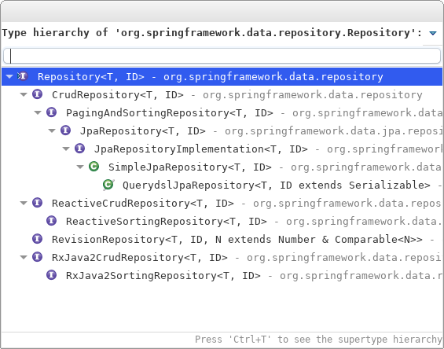
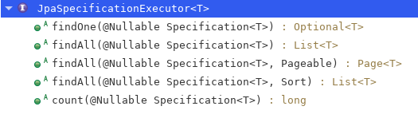

Spring Data 概述
- Spring Data 是 Spring 的一个子项目，用于简化数据库访问，支持 NoSQL 与 关系型数据库。其主要目标是使数据库的访问变得方便快捷
Spring Data JPA 概述
- Spring Data JPA：致力于减少 DAO 层的开发量，开发者只须声明持久层的接口即可
- Spring Data JPA 做的便是规范方法的名字，根据符合规范的名字来确定方法需要实现什么样的逻辑
Spring Data JPA 开发步骤
配置 Spring 整合 JPA（见 JPA ）
在 Spring 配置文件中配置 Spring Data，让 Spring 为声明的接口创建代理对象。配置了 <jpa:repositories> 后，Spring 初始化容器时将会扫描其 base-package 属性指定的包及其子包，为继承 Repository 接口或其子接口的接口创建代理对象，并将代理对象注入 Spring IOC 容器，业务层便可通过 Spring 自动封装的特性来直接使用该对象
需导入 Spring Data Commons 和 Spring Data JPA 这两个主要模块
配置 Spring Data
1
<jpa:repositories base-package="beiran.dao" entity-manager-factory-ref="entityManagerFactory" transaction-manager-ref="jpaTransactionManager"></jpa:repositories>
声明持久层的接口，该接口继承 Repository 接口，Repository 是一个标记型接口，不包含任何方法，如需必要，Spring Data 可实现 Repository 的其他子接口，其中定义了一些常用的 CRUD 及分页相关的方法
在接口中声明需要的方法，Spring Data 将根据给定的策略来为其生成实现代码
Repository 接口
Repository 接口是 Spring Data 的一个核心接口，它不提供任何方法，开发者需要在自己定义的接口声明需要的方法（声明的方法需要遵循规范）
可以在持久层接口上使用 @RepositoryDefinition 注解，并为其指定 domainClass（指定实体类） 和 idClass（指定该实体类的主键类型） 属性，这是与继承 Repository 接口等价的一种方式
基础的 Repository 接口提供了最基本的数据访问功能，它的几个子接口则扩展了一些功能
Repository：仅仅是一个标记，表明任何继承它的接口均为持久层接口类
CrudRepository：继承 Repository，实现了一组 CRUD 相关的方法
PagingAndSortingRepository：继承 CrudRepository，实现了一组分页和排序相关的方法
JpaRepository：继承 PagingAndSortingRepository，实现一组 JPA 规范相关的方法
自定义的 XxxRepository 需要继承 JpaRepository，这样的 XxxRepository 接口就具备了通用的数据访问控制层的能力
JpaSpecificationExecutor：不属于 Repository 的子接口，实现一组 JPA Criteria 查询相关的方法

Spring Data JPA 方法定义规范
简单条件查询：查询某一个实体或者集合
按照 Spring Data JPA 的规范，查询方法以 find | read | get 开头，涉及条件查询时，条件的属性用条件关键字连接，要注意的是：条件属性以首字母大写，支持属性的级联查询，若当前类有符合条件的属性，则优先使用，而不使用级联属性，若需要使用级联属性，则属性之间使用 “_” 进行连接
-
Keyword Sample JPQL snippet And findByLastnameAndFirstname … where x.lastname = ?1 and x.firstname = ?2 Or findByLastnameOrFirstname … where x.lastname = ?1 or x.firstname = ?2 Is,EqualsfindByFirstname,findByFirstnameIs,findByFirstNameEquals… where x.firstname = ?1 Between findByStartDateBetween … where x.startDate between ?1 and ?2 LessThan findByAgeLessThan … where x.age < ?1 LessThanEqual findByAgeLessThanEqual … where x.age <= ?1 GreaterThan findByAgeGreaterThan … where x.age > ?1 GreaterThanEqual findByAgeGreaterThanEqual … where x.age >= ?1 After findByStartDateAfter … where x.startDate > ?1 Before findByStartDateBefore … where x.startDate < ?1 IsNull,NullfindByAge(Is)Null … where x.age is null IsNotNull,NotNullfindByAge(Is)NotNull … where x.age not null Like findByFirstnameLike … where x.firstname like ?1 NotLike findByFirstnameNotLike … where x.firstname not like ?1 StartingWith findByFirstnameStartingWith … where x.firstname like ?1(parameter bound with appended%)EndingWith findByFirstnameEndingWith … where x.firstname like ?1(parameter bound with prepended%)Containing findByFirstnameContaining … where x.firstname like ?1(parameter bound wrapped in%)OrderBy findByAgeOrderByLastnameDesc … where x.age = ?1 order by x.lastname desc Not findByLastnameNot … where x.lastname <> ?1 In findByAgeIn(Collection ages) … where x.age in ?1 NotIn findByAgeNotIn(Collection<Age> ages) … where x.age not in ?1 True findByActiveTrue() … where x.active = true False findByActiveFalse() … where x.active = false IgnoreCase findByFirstnameIgnoreCase … where UPPER(x.firstame) = UPPER(?1)
查询方法解析流程
- 假如创建一个查询：findByUserDepUuid()，则框架在解析该方法时，首先剔除 findBy，然后对剩下的属性进行解析，假设查询实体为 Doc
- 先判断 userDepUuid（根据 POJO 规范，首字母变小写）是否为查询实体的一个属性，如果是，则表示根据该属性进行查询。如果没有该属性，则进行下一步
- 从右往左截取地一个大写字母开头的字符串（此处为 Uuid ），然后检查剩下的字符串是否为查询实体的一个属性，如果是，则表示根据该属性进行查询，如果没有该属性，则重复本步骤，继续从右往左截取。最后假设 user 为查询实体的一个属性
- 接着处理剩下部分（ DepUuid ），先判断 user 所对应的类型是否有 depUuid 属性，如果有，则表示该方法最终是根据 “Doc.user.depUuid” 的取值进行查询，否则继续按照上一步的规则从右往左截取，最终表示根据 “Doc.user.dep.uuid” 的值进行查询
- 可能会存在一种特殊情况，假设 Doc 包含一个 user 的属性，也有一个 userDep 属性，此时会存在混淆。可以明确在属性之间加上 “_” 以显式表达意图
- 还可以直接在方法的参数上加入分页或者排序的参数
- Page<User> findByName(String name, Pageable pageable)
- List<User> findByName(String name, Sort sort)
使用 @Query 注解
- 可以声明在 Repository 方法中，摆脱像命名查询那样的约束，将查询直接在相应的接口方法中声明，结构更清晰
- 索引参数
- 形如
?X，索引值从 1 开始，查询中?X个数需要与方法定义的参数个数相一致，切顺序也需要一致
- 形如
- 命名参数
- 形如
:named，可以定义好参数名，赋值时采用 @Param(“参数名”)，顺序无需一致
- 形如
- 若 @Query 注解中有 LIKE 关键字，则后面的参数可以直接加
%，这样在传递参数值时就可以不加 - 也可以使用 @Query 注解来指定本地查询，需要设置 nativeQuery 属性为 true
@Modifying 注解和事务
- @Query 与 @Modifying 两个注解一起声明，可以自定义更新操作，当只涉及某些字段更新时最常用
- 方法的返回值应该是 int，表示更新语句所影响的行数
- 在调用的地方必须添加事务，没有事务无法正常执行
- Spring Data 提供了默认的事务处理方式，即所有的查询均声明为只读事务
- 对于自定义的方法，如需改变 Spring Data 提供的事务默认方式，可以在方法上添加 @Transactional 注解
- 进行多个 Repository 操作时，也应该使它们在同一个事务中处理，按照 MVC 的思想，这部分属于 Service 层，因此，需要在 Service 层实现对多个 Repository 的调用，并在相应方法上声明事务
CrudRepository 接口
- CrudRepository 接口提供了最基本的对实体类的增删改查操作
- <S extends T> S save(S entity)：保存单个实体
- <S extends T> Iterable<S> saveAll(Iterable<S> entities)：保存集合（批量保存）
- Optional<T> findById(ID id)：根据 id 查找实体
- boolean existsById(ID id)：根据 id 判断实体是否存在
- Iterable<T> findAll()：查询所有的实体（不建议使用）
- Iterable<T> findAllById(Iterable<ID> ids)：根据给定的 id 集合查询实体
- long count()：查询实体数量
- void deleteById(ID id)：根据 id 删除实体
- void delete(T entity)：删除一个实体
- void deleteAll(Iterable<? extends T> entities)：删除给定实体集合
- void deleteAll()：删除所有实体（不建议使用）
PagingAndSortingRepository 接口
- 该接口在 CrudRepository 接口的基础上提供了分页与排序的功能
- Iterable<T> findAll(Sort sort)：排序
- Page<T> findAll(Pageable pageable)：分页（包含排序）
- Pageable 接口通常使用其实现类 PageRequest，其中封装了分页需要的信息。Sort 类封装了排序的信息。Sort 类构造器中的 Order 指的是具体针对某一个属性进行升序排序还是降序排序
JpaRepository 接口
- 该接口在 PagingAndSortingRepository 接口的基础上提供了 JPA 的相关功能
- void flush()：刷新缓存
- <S extends T> S saveAndFlush(S entity)：类似于 JPA 的 merge() 方法
- void deleteInBatch(Iterable<T> entities)：删除一个实体集合
JpaSpecificationExecutor 接口
实现一组 JPA Criteria 查询相关的方法

Specification：封装 JPA Criteria 的查询条件，通常使用匿名内部类的方式来创建该接口的对象
- Predicate toPredicate(Root<T> root, CriteriaQuery<?> query, CriteriaBuilder criteriaBuilder)
- root：代表查询的实体类
- query：可以从中得到 Root 对象，即告知 JPA Criteria 查询要查询哪一个实体类，也可以用来添加查询条件，还可以结合 EntityManager 对象得到最终查询的 TypedQuery 对象
- criteriaBuilder：用于创建 Criteria 相关对象的工厂，可以从中获取到 Predicate 对象
- Predicate toPredicate(Root<T> root, CriteriaQuery<?> query, CriteriaBuilder criteriaBuilder)
自定义 Repository 方法
- 为某一个 Repository 接口上添加自定义方法
- 定义一个接口，声明自定义的方法
- 提供该自定义接口的实现类（并实现自定义接口中的方法），类名需要在自定义接口的名字的基础上加上 Impl
- 在 XxxRepository 接口上继承自定义的接口即可
- 注：默认情况下，Spring Data 会在 base-package 中查找 “自定义接口名Impl” 作为实现类，也可以通过 repository-impl-postfix 声明后缀
- 为所有的 Repository 接口都添加自定义方法
- 声明一个接口，在该接口中声明需要自定义的方法，且该接口需要继承 Spring Data 的 Repository 接口
- 提供上一步的接口的实现类，且继承 SimpleJpaRepository，并提供方法的实现
- 定义 JpaRepositoryFactoryBean 的实现类，使其生成第一步定义的接口实现类的对象
- 修改 <jpa:repositories> 节点的 factory-class 属性，使其指向自定义的 JpaRepositoryFactoryBean 的实现类的全类名
- 注意：全局的扩展实现类不要使用 Impl 作为后缀名。或者为全局扩展接口添加 @NoRepositoryBean 注解让 Spring Data 不认为它是一个 Repository